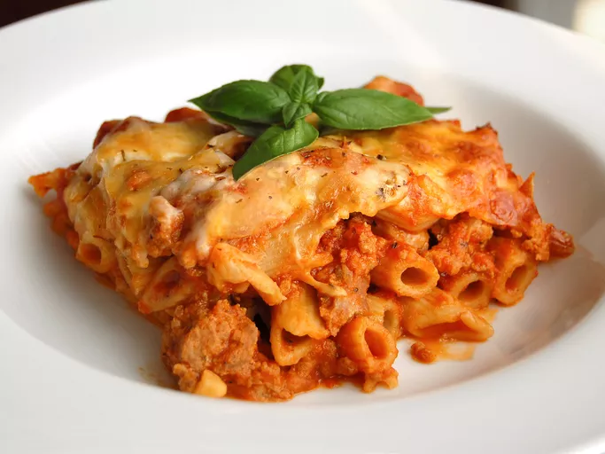

Baked Ziti
Home

Description
This baked ziti is always a hit! A lady I worked with brought this in one day, and everyone loved it. Now it
is the favorite of all my dinner guests. I have made this also without the meat, and it is well received.
Preperation
| Prep Time |
Cook Time |
| 15 Min |
45 Min |
|
Total Time: |
Servings: |
| 1 hr |
10 |
|
| Yield: |
| 1 9x13-inch casserole |
Ingredients
- 1 pound dry ziti pasta
- 1 onion, chopped
- 1 pound lean ground beef
- 2 (26 ounce) jars spaghetti sauce
- 6 ounces provolone cheese, sliced
- 1 ½ cups sour cream
- 6 ounces mozzarella cheese, shredded
- 2 tablespoons grated Parmesan cheese
Directions
- Bring a large pot of lightly salted water to a boil. Add ziti pasta, and cook until al dente, about 8
minutes;
drain.
- Meanwhile, brown ground beef and onion in a large skillet over medium heat; stir in spaghetti sauce and
simmer
for
15 minutes.
- Preheat the oven to 350 degrees F (175 degrees C). Butter a 9x13-inch baking dish.
- Spread 1/2 of the ziti in the bottom of the prepared dish; top with Provolone cheese, sour cream, 1/2 of
the
meat sauce, remaining ziti, mozzarella cheese, and remaining meat sauce. Top with grated Parmesan
cheese.
- Bake in the preheated oven until heated through and cheeses have melted, about 30 minutes.
Nutrition Facts
(per serving)
|
578 |
25g |
58g |
28g |
Calories |
Fat |
Carbs |
Protein |